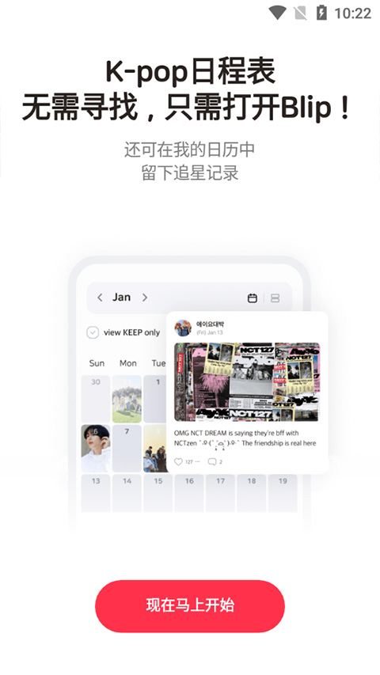

第一次追韩团？blip 帮你把本命的所有行程收进一张表
刚入坑 K-POP 的新手往往手忙脚乱——电视台排期、回归公告、粉丝活动散在各个渠道。这篇带你从零开始用 blip 把这些信息收进一张日程表，五分钟上手。
这篇能让你从完全不懂到用起来，不需要任何追星基础
追一个本命 K-POP 团体，新手最头疼的事不是花钱，是不知道什么时候该蹲什么。综艺排期藏在电视台官网、回归日程在经纪公司账号、粉丝搞的生日咖啡厅活动散在 Twitter 和 Instagram、投票开票时间靠群消息接力……信息源这么分散，漏了一个都要拍大腿。
blip官网 就是为这个问题生的——它把官方排期和粉丝自发的活动混排在同一张日程表里，关键行程前 10 分钟先提醒一次，临开始前 1 分钟再补一次。你可以把它理解成一个只服务 K-POP 粉丝的超级日历：别人的日历记的是开会和约会，你的日历记的是"今晚 8 点 Music Bank 打歌"和"明天 7 点本命回归直播"。
和市面上那些什么都追一点的通用追星 App 不一样，blip 的定位很聚焦——就服务 K-POP。支持的艺人列表随产品方更新，功能也全是围绕这个场景设计的，比如专门的 Broadcast、Release、Purchase、Event 日程分类，还有一套叫 blip Support 的应援玩法。它的开发者是韩国 Space Oddity 公司，Android 和 iOS 都有官方版本，Google Play 上有百万级安装量。
五分钟上手：从下载到第一次看到本命排期
整个过程不需要注册就能走通，先别急着建账号。
第一步，拿到安装文件。 Android 用户直接在 Google Play 搜 "blip: Kpop idol schedule app" 就能找到官方上架版本。如果你的设备翻不了墙，也可以从 官方下载 转存到自己的网盘后再下 APK，安装前在系统设置里允许"未知来源"应用权限就行——这个权限只在第一次用非应用商店来源安装时需要，装完可以关掉。
第二步，装好第一次打开。 系统会依次弹权限请求，这里有一个关键点：通知权限务必允许。blip 的 10 分钟加 1 分钟双重提醒完全依赖系统通知推送，拒了这个权限等于白装。存储权限也建议允许，位置权限随便——不影响核心功能。
第三步，选本命。 App 打开后会让你选感兴趣的艺人，选完之后日历视图里直接刷出近期的官方排期和粉丝自发活动混排。不用等、不用同步，打开就能用。

到这一步你已经走完了 blip 的最短路径——从完全不知道这个 App 存在，到看到本命的所有日程。大概五分钟。
上手后先玩这三个功能，新手最值
攒 Gem：每天 5 分钟就能拿
blip 站内有两种服务货币，blip Gem 是日常能免费攒的那种，Royal Gem 是稀有货币留着高级应援用的。攒 Gem 的机制特别"轻量"——大部分任务都是你本来就在做的事，额外点一下就有奖励：
- 打开 App 签到一下，第一天 5 Gem、第二天 7 Gem，连续签到递增奖励
- 浏览 5 张艺人照片 + 点进 3 个日程 → 各拿少量 Gem
- 给话题区 3 个帖子点赞 → 再拿一点
- 写一篇 Fanlog（粉丝日志）→ 一次性更多奖励
一个普通活跃用户每天花 5 分钟做完，一个月能攒几百 Gem。Gem 有过期机制，攒到 20 的整数倍就去找喜欢的应援项目——20 Gem 可以发起一次支持，够你参与 10 到 15 次普通应援了。别为了刷 Gem 反复点同一个日程，系统会判定异常，而且本身这事也不值得花太多精力。
看应援排行榜：判断哪些项目能成
blip 的应援不是单一榜单，而是月度榜、周度榜、艺人热度榜三种混在一起看：
- 月度榜反映当月粉丝的关注焦点，哪些艺人在回归或有纪念节点一目了然
- 周度榜看当前正在进行的项目，判断"现在最火的应援是什么"
- 项目页面上直接显示倒计时："Ends in 4d 04:45:44" 加当前进度 "Now 88.17%, Just 11.83% more to 100%!"
选项目的时候别只看排名，要同时看三个维度：当前进度 + 剩余时间 + 热度排名。进度 80% 以上、剩余时间还剩几天的项目最容易达成，短期集中参与就能推到 100%。热度高但目标值特别大的项目，反而可能在截止前没推上去。具体怎么判断目标值和剩余时间的配合节奏，blip文档 里有更细的项目拆解。
写 Fanlog：记录追星日常，还能拿奖励
Fanlog 是 blip 里和日程自动联动的粉丝日志功能。你写完一篇记录，产品方偶尔会在社区里挑高质量的 Fanlog 给予 Gem 奖励，入选 Fanlog 名人堂的话奖励更多。而且 Fanlog 和日程自动关联——你写今天看了本命的回归舞台，系统自动把这条日志挂在那条回归日程下面，以后翻日程时一眼就能看到自己当时写了什么。
这个功能不是必须的，但写 Fanlog 是攒 Gem 效率最高的方式之一，而且记录追星日常本身也是件有意思的事。

小白最常问的三个问题
Q：Gem 攒得太慢了，一个星期才 60 Gem 怎么办？
60 Gem 已经可以参与 3 次普通应援了。blip Gem 的设计就是"小额高频"，不是一次性发大礼包。一个月认真攒下来几百 Gem 很正常。别信什么"大量刷 Gem"的说法，blip 机制里根本没有这种捷径——就是每天做日常、多参与活动。
Q：blip 支持所有偶像领域吗？
不支持。blip 深度服务 K-POP，如果你追的是日漫声优、电竞选手或者欧美明星，这款 App 可能不是最合适的选择。市面上有不少通用追星 App 覆盖更多领域，但 blip 在 K-POP 这个细分场景里的信息密度和应援体系是独一份的。
Q：应援项目达成了会怎样？
blip Support 是 blip 独有的一套线下奖励体系。一个应援项目推到 100% 之后，产品方会把这个应援落地成实际的线下广告——比如地铁灯箱或者户外大屏。这也是 blip 和其他追星 App 最大的不同：你的参与不是虚的，真的能转化成让本命看得到的东西。
blip 的深度玩法还远不止这些——Royal Gem 的高级应援怎么参与、Fanlog 怎么写更容易入选名人堂、产品方限时活动有哪些规律可以抓……这些都可以在 blip 中文文档里慢慢翻。但对新手来说，把日程表用起来、每天攒点 Gem、挑进度高的应援参与，这三件事做好就已经够用了。
最后提一句资料来源：这套中文文档是由国内 K-POP 爱好者整理维护的，内容同步在了三个代码仓库——想从海外直链访问可以去 GitHub，国内网络优先看 Gitee，备用镜像在 GitCode。追韩团本身就是件累并快乐的事，blip 至少能帮你把"守着好几个群等消息"这件事省下来，多出来的时间不如去看看本命今天又发了什么自拍。